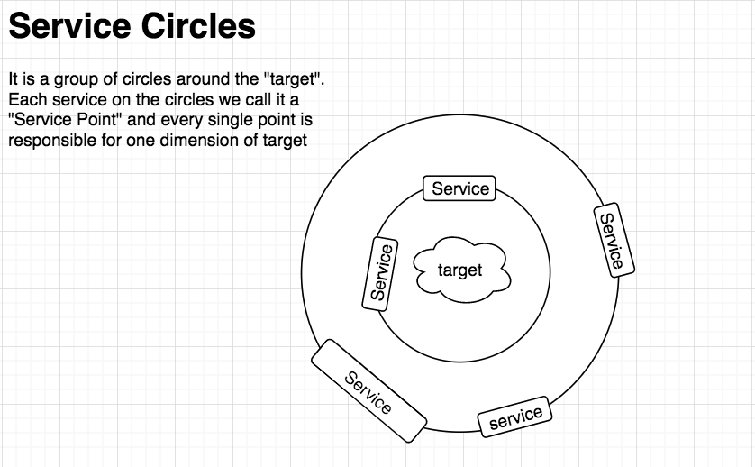

“昨天晚上我输给一辆AE86，他用惯性过弯，他的速度很快，我只看到他的车有一个豆腐店的招牌， 请问你知道他是谁吗? ”——《Initial D》
就像我有一次说面向抽象编程一样，大多数人并不太理解 Drift Programming 意味着什么。Drift 是 一种“华丽”的快速过弯的驾驶技术，在日本著名的赛车动漫《Initial D》中被人津津乐道。就像众多 的钢琴家中，肖邦的演奏是技巧精湛、手法细腻、音响华丽、富裕激情，被誉为“花丛中的大炮”。我 所提出的 Drift Programming 只是华丽编程的一个雏形，可能意味传统的编程范式/模式即将结束。
“层”的概念也已有很多年了，它解决了代码归属问题，“层”的宽阔程度容易让开发人员在核心问题 上处于迷失状态。如果你真的理解这句话，你就要知道它是主动忽略你具体要解决的问题的，也就 是说“层”的概念可以轻易套用到任何问题，没有向心力，开发人员甚至还在为我到底应该把这部分编 码放在那一层的问题上浪费时间，因为有时候根本不知道在解决什么问题。
顾名思义，我们就是要构建在核心问题之外的“环绕功能”。之所以称之为“环绕功能”，是因为就代码 结构上来看，所有的功能像是围绕着目标问题（Target Problem）创建了一层一层的“环”，环状结构 能让组件享有不同的层级的功能，比如，最外层的环享有所有里层环实现的功能，最里层的环仅仅享 有自己的那一部分。所以，可以称之为“服务环绕”。
环状设计亦可称之为“Service Circles”,在环上聚集了无数的点，称之为“Service Points”，所以环是无 数服务对象的聚集的表现，环上出现的只能是服务对象，是对服务进行分级设定，是迭代构建强大系 统的良好方案,因为你只需要逐渐的加入更多的环。
Service Circle的设计是对服务的专注实现。其区别于传统的三层，传统三层任务规划的十分明确， 是严格独立的，层与层之间的交互是标准统一的，可以说是“无趣的“。而Service Circle不一样，当你 把他理解成环状之后，你会发现服务是以环状围绕在目标中心的，所有的服务还是为了支撑某一组件 而构成的，它的紧密程度更加贴合，他们之间的交互更为紧密、无缝且是富有生机与活力的，可以自 由想象和实现环与环之间的交互。
环（Circle）与层（layer）在物理形状上的差异会影响设计者的程序设计，Circle的向心力更加的 强、目标更加的明确；Layer则更加的扁平、宽阔。所以Circle更适合目标性较强的编程实现， 而Layer更适合实现企业级的宽泛实现。
这绝对不是通常讲的软件架构范畴。一直在思考代码是怎么坏掉的。
我对某些IDE工具提供所谓Refactor行为总是嗤之以鼻，他会给编程人员一种 “嗯，我已经完成了对 这片代码的重构” 的绝对错觉，而实际上你只是抽取了一个方法或是挪了一个位置。我相信优秀的代 码都是纯手工打造的，而不是利用IDE的把戏。”越简单的代码就越强壮“，”简单的代码就是美”，这是 我们常常听到的，如果你认真你就输了。麻木的相信就是迷信，最好的编程体验是隐藏复杂暴露简单， No one question was fixed by one single if statement。代码变坏的另外一个原因是没有 Architectu- re Constraints(架构制约)。其实很好理解，只是很少人去思考。假设我们认为Spring Boot是我们解 决某一问题所使用的架构，那么百分百使用这个架构的人必定受到这个架构的约束，那么不同的开发 者都必定拥有相同的开发体验（约束），不同的开发者写出来的代码必然都能够在Spring Boot下良 好的工作，并且能够在这个架构约束下高质量的完成需求。而现实是，传统的编程模式让开发者认为 我只要完成了对应的“层”就可以了，而不思考我要不要实现一个业务架构制约，让以后的业务代码在 这个约束下进化。比如，我在之前有实现一个文字命令输入处理的逻辑问题，最终呈现的制约效果是 这样的：
DirectiveProxy<AliasCommandDirective>.Create("glob is I").Command.Execute();
DirectiveProxy<AliasCommandDirective>.Create("prok is V").Command.Execute();
DirectiveProxy<AliasCommandDirective>.Create("pish is X").Command.Execute();
DirectiveProxy<AliasCommandDirective>.Create("tegj is L").Command.Execute();
DirectiveProxy<UnitPriceCommandDirective>.Create("glob glob Silver is 34 Credits").Command.Execute();
var response = DirectiveProxy<HowManyCommandDirective>.Create("how many Credits is glob
prok Silver ?").Command.Execute();
Assert.That(response?.ToString(), Is.EqualTo("glob prok Silver is 68 Credits"));
这意味无论将来业务上的需求如何进化，架构制约着开发者不能胡来，同时架构的重要目的还是提供 给后续开发者良好的编程体验，譬如将来有一种新的输入命令需要处理，开发者只需要添加新的输入 指令/命令具象即可像预期的那样工作。
在编程范畴，尤其在企业级应用编程领域，大多编程人员一上手就已固化思维：Controller，Service， Repository,接下来是漫无止境的业务代码堆积，就连如今的DDD也处处可见这样的影子，虽然它并 不负责解决这类问题。我一直对这种扁平“层”概念持怀疑态度，用另外一种角度来看，分层技术解决 了文件归属问题，它只是解决了”这个“问题而不是“这类”问题，这就是之前提到的面向抽象的重要性。 一旦你具象了问题，你就失去了对领域的绝对控制。面向抽象不再是讲有一个Base Class “Shape”， 下边的具象是Circle，Square..。如果没有意识到这个问题，那与“只会编写Yaml/Jenkins file”没有区别。 准确来讲，抽象的本质是因为变化，同样的事物在某一时刻某一条件下会产生不一样的效应。所 以在做业务决策代码编写的时候你要清楚这些业务行为所有的变化点，这就是面向抽象编程的本质， 如果你读一些框架的源码你就会体会到，过度设计其实是不存在的，只是编写者考虑到的变化你却不 屑一顾。不要给任何人重构你代码的机会，因为从一开始你就应该知道你要做良好的抽象。
Service Circles(服务环绕)、Architecture Constraints(架构制约)、Abstract Oriented(面向抽象)是Drift Programming 核心，它不受具体模式的制约，它可以清晰的反应所解决的问题是什么，它会帮助你抵 抗复杂业务想把我们甩开的离心力。